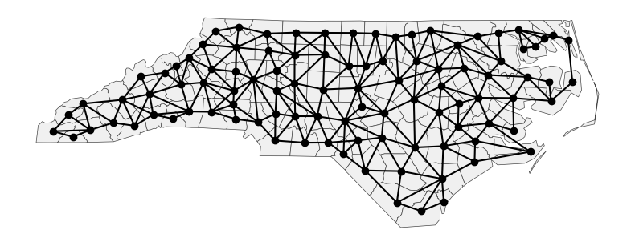
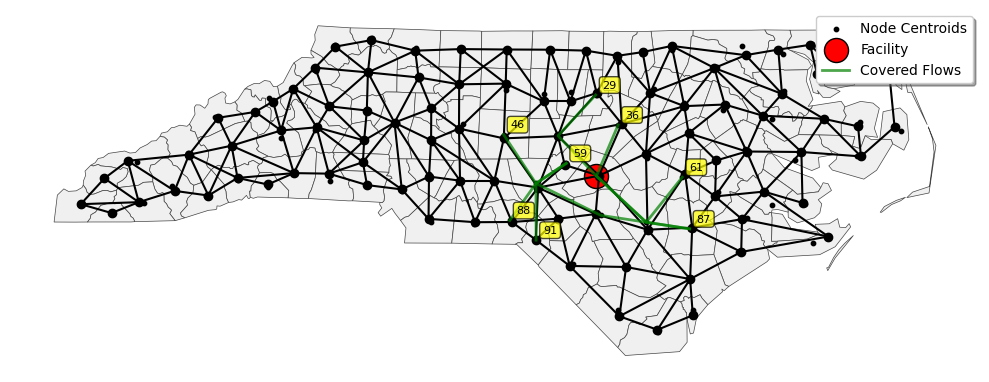
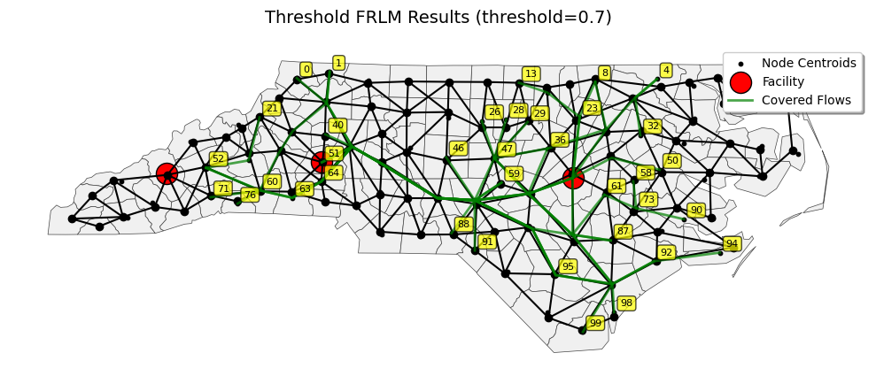
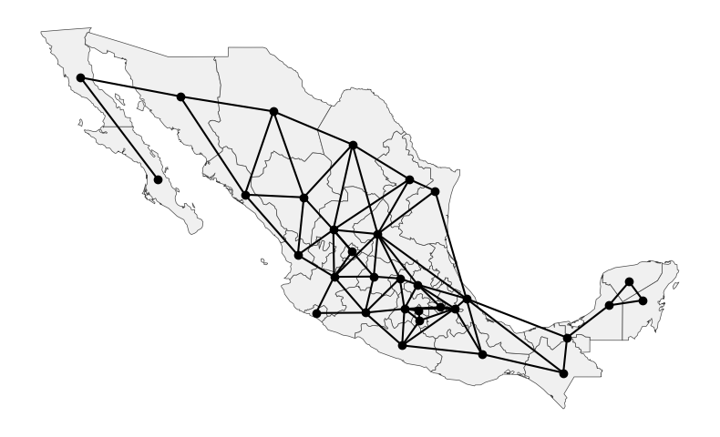
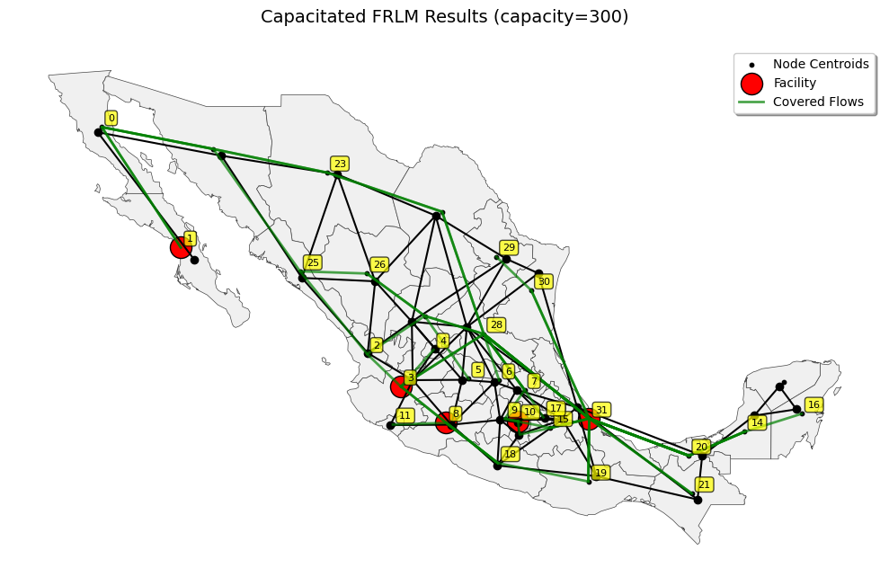

This page was generated from notebooks/flow.ipynb.
Interactive online version:

Flow Refueling Location Model (FRLM)¶
Authors: Zixin Feng, Germano Barcelos, Levi John Wolf, Qunshan Zhao
The FRLM is a location-allocation model for optimally locating refueling facilities for range-limited vehicles, such as alt-fuel vehicles. For these vehicles, it may be necessary to stop at more than one facility in order to successfully refuel the entire path length. The model optimally locates \(p\) refueling stations on a network so as to maximize the total flow volume refueled. The model could also work for any new network-based, range limited surface transport mode.
FRLM can be written as:
\(\begin{array}{ll} \textbf{Max} & \sum\limits_{q \in Q} f_q y_q \\[0.7em] \textbf{Subject to:} & \sum\limits_{h \in H} b_{qh} v_h \geq y_q \quad \forall q \in Q \\[0.7em] & a_{hk} x_k \geq v_h \quad \forall h \in H; k| a_{hk} =1 \\[0.7em] & \sum\limits_{k \in K} x_k = p \\[0.7em] & x_k, v_h, y_q \in \{0,1\} \quad \forall k, h, q \\[0.7em] \end{array}\)
\(\begin{array}{ll} q & = \text{index of origin–destination (O–D) pairs} \\ Q & = \text{set of all O–D pairs} \\ f_q & = \text{flow volume on shortest path for O–D pair } q \\ y_q & = \text{1 if flow } q \text{ is refueled, 0 otherwise} \\ k & = \text{potential facility location} \\ K & = \text{set of all potential facility locations} \\ x_k & = \text{1 if a facility is located at } k \text{, 0 otherwise} \\ p & = \text{the number of facilities to be located} \\ h & = \text{index of facility combinations} \\ H & = \text{set of all potential facility combinations} \\ a_{hk} & = \text{a coefficient equal to 1 if facility } k \text{ is in combination } h \text{, 0 otherwise} \\ b_{qh} & = \text{a coefficient equal to 1 if combination } h \text{ can refuel O-D pair} q \text{, 0 otherwise} \\ v_h & = \text{1 if all facilities in combination } h \text{ are open, 0 otherwise} \end{array}\)
The formulation above is adapted from Kuby and Lim (2005).
[ ]:
import geopandas as gpd
import libpysal
import matplotlib.pyplot as plt
import numpy as np
import pandas as pd
import pulp
import scipy.sparse as sp
from libpysal import examples
from libpysal.examples import get_path
from spopt.locate.flow import FRLM
[2]:
%load_ext watermark
%watermark -iv
pandas : 2.2.1
numpy : 1.26.4
libpysal : 4.13.0
matplotlib: 3.8.0
pulp : 2.8.0
geopandas : 1.1.1
scipy : 1.16.1
Create sample network¶
[4]:
gdf = gpd.read_file(get_path("sids2.shp")) # Load an example shapfile from libpysal;
gdf = gdf.set_crs(epsg=4326)
gdf_proj = gdf.to_crs(epsg=3857)
H = libpysal.graph.Graph.build_contiguity(gdf_proj, rook=False)
[5]:
fig, ax = plt.subplots(figsize=(8, 8))
gdf_proj.plot(ax=ax, color="#f0f0f0", edgecolor="#444", linewidth=0.5)
H.plot(gdf_proj, ax=ax)
ax.set_axis_off()
plt.tight_layout()
plt.show()

[6]:
# Change libpysal graph to scipy sparse matrix
G = H.sparse
G_csr = sp.csr_matrix(G)
Create sample flows¶
Create Origin-Destination (OD) pairs to represent travel demand across a spatial network. Each tuple in the dataset follows the format (origin_node, destination_node, flow_volume). The flow volumes are the total number of trips between each pair of locations.
[7]:
np.random.seed(42)
num_nodes = G.shape[0]
nodes = list(range(num_nodes))
od_pairs = []
while len(od_pairs) < 50:
origin = np.random.choice(nodes)
dest = np.random.choice(nodes)
if origin != dest:
volume = np.random.randint(10, 200)
od_pairs.append({"origin": origin, "destination": dest, "volume": volume})
flows_df = pd.DataFrame(od_pairs)
[8]:
flows_df.head()
[8]:
| origin | destination | volume | |
|---|---|---|---|
| 0 | 51 | 92 | 24 |
| 1 | 71 | 60 | 30 |
| 2 | 82 | 86 | 84 |
| 3 | 74 | 87 | 126 |
| 4 | 99 | 23 | 140 |
Basic FRLM model¶
[9]:
frlm_basic = FRLM.from_flow_dataframe(
p_facilities=1, # Locate 1 facility
vehicle_range=0.2,
# values >=1 are absolute distances in network units;
# values between 0 and 1 represent percentage of the longest path
# (e.g., 0.2 = 20% of longest path)
# uncapacitated model is used by default, set `capacity= ` for capacitated model
network=G_csr,
flows=flows_df,
)
[10]:
frlm_basic
[10]:
FRLM(vehicle_range=20% of longest path, p=1)
[ ]:
frlm_basic.problem.writeLP("frlm_basic.lp")
[12]:
frlm_basic.solve(solver=pulp.GUROBI_CMD()) # use solver='greedy' for greedy solver
[12]:
{'status': 'Optimal', 'objective_value': 529, 'selected_facilities': [62]}
Retrieve flow/vmt coverage details, and get Dict with coverage info for each OD pair
flow_coverage = model.get_flow_coverage()
vmt_coverage = model.get_vmt_coverage()
Retrieve node coverage percentage
node_coverage_pct = model.get_node_coverage_percentage()
Get all available statistics in one call
details = model.get_detailed_results()
[13]:
result = frlm_basic.get_flow_coverage()
result
[13]:
{'covered_volume': 529.0, 'flow_volume': 4531, 'covered_proportion': 0.12}
[14]:
results_basic = frlm_basic.get_detailed_results()
results_basic
[14]:
{'model_parameters': {'vehicle_range': 3.4,
'p_facilities': 1,
'capacity': None,
'threshold': 0.0,
'objective_type': 'flow'},
'solution': {'status': 'Optimal',
'objective_value': 529.0,
'selected_facilities': [62],
'solution_time': 0.12},
'solver_statistics': {},
'coverage_statistics': {'flow_breakdown': {(51, 92): {'flow_volume': 24,
'covered_proportion': 0.0,
'covered_volume': 0.0},
(71, 60): {'flow_volume': 30,
'covered_proportion': 0.0,
'covered_volume': 0.0},
(82, 86): {'flow_volume': 84,
'covered_proportion': 0.0,
'covered_volume': 0.0},
(74, 87): {'flow_volume': 126,
'covered_proportion': 0.0,
'covered_volume': 0.0},
(99, 23): {'flow_volume': 140,
'covered_proportion': 0.0,
'covered_volume': 0.0},
(21, 52): {'flow_volume': 11,
'covered_proportion': 0.0,
'covered_volume': 0.0},
(87, 29): {'flow_volume': 47,
'covered_proportion': 1.0,
'covered_volume': 47.0},
(1, 63): {'flow_volume': 197,
'covered_proportion': 0.0,
'covered_volume': 0.0},
(20, 32): {'flow_volume': 67,
'covered_proportion': 0.0,
'covered_volume': 0.0},
(21, 88): {'flow_volume': 58,
'covered_proportion': 0.0,
'covered_volume': 0.0},
(90, 58): {'flow_volume': 179,
'covered_proportion': 0.0,
'covered_volume': 0.0},
(91, 59): {'flow_volume': 181,
'covered_proportion': 1.0,
'covered_volume': 181.0},
(46, 61): {'flow_volume': 60,
'covered_proportion': 1.0,
'covered_volume': 60.0},
(54, 63): {'flow_volume': 140,
'covered_proportion': 0.0,
'covered_volume': 0.0},
(50, 6): {'flow_volume': 30,
'covered_proportion': 0.0,
'covered_volume': 0.0},
(72, 38): {'flow_volume': 27,
'covered_proportion': 0.0,
'covered_volume': 0.0},
(3, 88): {'flow_volume': 69,
'covered_proportion': 0.0,
'covered_volume': 0.0},
(13, 8): {'flow_volume': 99,
'covered_proportion': 0.0,
'covered_volume': 0.0},
(52, 1): {'flow_volume': 93,
'covered_proportion': 0.0,
'covered_volume': 0.0},
(7, 46): {'flow_volume': 44,
'covered_proportion': 0.0,
'covered_volume': 0.0},
(77, 80): {'flow_volume': 173,
'covered_proportion': 0.0,
'covered_volume': 0.0},
(49, 3): {'flow_volume': 11,
'covered_proportion': 0.0,
'covered_volume': 0.0},
(5, 53): {'flow_volume': 115,
'covered_proportion': 0.0,
'covered_volume': 0.0},
(3, 53): {'flow_volume': 155,
'covered_proportion': 0.0,
'covered_volume': 0.0},
(89, 43): {'flow_volume': 171,
'covered_proportion': 0.0,
'covered_volume': 0.0},
(73, 61): {'flow_volume': 23,
'covered_proportion': 0.0,
'covered_volume': 0.0},
(94, 47): {'flow_volume': 24,
'covered_proportion': 0.0,
'covered_volume': 0.0},
(71, 77): {'flow_volume': 199,
'covered_proportion': 0.0,
'covered_volume': 0.0},
(39, 84): {'flow_volume': 91,
'covered_proportion': 0.0,
'covered_volume': 0.0},
(52, 23): {'flow_volume': 163,
'covered_proportion': 0.0,
'covered_volume': 0.0},
(88, 59): {'flow_volume': 133,
'covered_proportion': 1.0,
'covered_volume': 133.0},
(40, 28): {'flow_volume': 24,
'covered_proportion': 0.0,
'covered_volume': 0.0},
(44, 64): {'flow_volume': 98,
'covered_proportion': 0.0,
'covered_volume': 0.0},
(70, 8): {'flow_volume': 97,
'covered_proportion': 0.0,
'covered_volume': 0.0},
(0, 7): {'flow_volume': 72,
'covered_proportion': 0.0,
'covered_volume': 0.0},
(10, 80): {'flow_volume': 145,
'covered_proportion': 0.0,
'covered_volume': 0.0},
(32, 4): {'flow_volume': 50,
'covered_proportion': 0.0,
'covered_volume': 0.0},
(27, 6): {'flow_volume': 81,
'covered_proportion': 0.0,
'covered_volume': 0.0},
(11, 33): {'flow_volume': 42,
'covered_proportion': 0.0,
'covered_volume': 0.0},
(47, 22): {'flow_volume': 71,
'covered_proportion': 0.0,
'covered_volume': 0.0},
(87, 36): {'flow_volume': 108,
'covered_proportion': 1.0,
'covered_volume': 108.0},
(43, 85): {'flow_volume': 44,
'covered_proportion': 0.0,
'covered_volume': 0.0},
(64, 98): {'flow_volume': 110,
'covered_proportion': 0.0,
'covered_volume': 0.0},
(46, 77): {'flow_volume': 140,
'covered_proportion': 0.0,
'covered_volume': 0.0},
(0, 4): {'flow_volume': 151,
'covered_proportion': 0.0,
'covered_volume': 0.0},
(26, 8): {'flow_volume': 24,
'covered_proportion': 0.0,
'covered_volume': 0.0},
(89, 41): {'flow_volume': 133,
'covered_proportion': 0.0,
'covered_volume': 0.0},
(76, 50): {'flow_volume': 72,
'covered_proportion': 0.0,
'covered_volume': 0.0},
(95, 51): {'flow_volume': 105,
'covered_proportion': 0.0,
'covered_volume': 0.0}}}}
[16]:
coords = np.array([geom.centroid.coords[0] for geom in gdf_proj.geometry])
fig, ax = plt.subplots(figsize=(10, 10))
gdf_proj.plot(ax=ax, color="#f0f0f0", edgecolor="#444", linewidth=0.5)
H.plot(gdf_proj, ax=ax)
ax.scatter(coords[:, 0], coords[:, 1], color="black", s=10, label="Node Centroids")
covered_nodes = set()
for i, (facility, count) in enumerate(frlm_basic.selected_facilities.items()):
ax.scatter(
coords[facility][0],
coords[facility][1],
c="red",
s=300 * (count**0.7),
alpha=1,
edgecolors="black",
label="Facility" if i == 0 else None,
)
covered_label_added = False
for od_pair, coverage in frlm_basic.flow_coverage.items():
if coverage["covered_proportion"] > 0:
path = frlm_basic.flow_paths[od_pair]
path_coords = coords[path]
ax.plot(
path_coords[:, 0],
path_coords[:, 1],
"g-",
linewidth=2 * coverage["covered_proportion"],
alpha=0.7,
label="Covered Flows" if not covered_label_added else None,
)
covered_label_added = True
covered_nodes.add(od_pair[0])
covered_nodes.add(od_pair[1])
for node_id in covered_nodes:
ax.annotate(
str(node_id),
xy=(coords[node_id][0], coords[node_id][1]),
xytext=(5, 5),
textcoords="offset points",
fontsize=8,
bbox={"boxstyle": "round,pad=0.3", "facecolor": "yellow", "alpha": 0.7},
ha="left",
)
ax.set_axis_off()
ax.legend(loc="upper right", fontsize=10, frameon=True, fancybox=True, shadow=True)
plt.tight_layout()
plt.show()

The red dot indicates the selected facility location. Green lines show the OD flows that are covered by the selected facility.
FRLM threshold extension¶
The FRLM threshold extension is based on the original FRLM. The extended model optimally locates \(p\) refueling stations on a network to maximize the sum of weighted demand of covered origin/destination zones, where ‘covered’ means that the zone exceeds a specified threshold percentage of their total outbound/inbound round trips that are refuelable.
FRLM threshold extension can be written as:
\(\begin{array}{ll} \textbf{Max} \; W \sum_j w_j c_j + (1 - W) \frac{\sum_q y_q f_q}{\sum_q f_q} \\[0.7em] \textbf{Subject to:} \sum_{i \in K^q_{jk}} z_i \ge y_q \quad \forall q \in Q,\; a_{jk} \in A_q \\[0.7em] \sum_i z_i = p \\[0.7em] \frac{\sum_{q \in S_j} f_q y_q}{\sum_{q \in S_j} f_q} \ge T c_j \quad \forall j \in M \\[0.7em] z_i, y_q, c_j \in \{0, 1\} \quad \forall q \in Q,\; i \in N,\; j \in M \\[0.7em] \\ \end{array}\)
\(\begin{array}{ll} \textbf{N} & \text{: Set of nodes in the transportation network} \\ \textbf{M} & \text{: Sset of origin-destintaion nodes where (} M \subseteq N \text{)} \\ i, j, k & \text{: Indices for potnetial facilities/candidate sites/nodes} \\ q & \text{: Index of OD pairs (and the path between them)} \\ \textbf{Q} & \text{: Set of OD pairs} \\ \textbf{S}_j & \text{: Set of OD pairs originating from node } j \\ a_{jk} & \text{: Directional arc from node } j \text{ to node } k \\ \textbf{A}_q & \text{: Set of directional arcs on path } q \text{ (round trip: origin → destination → origin)} \\ K^{q}_{jk} & \text{: Set of candidate sites that can refuel arc } a_{jk} \text{ in } A_q \text{ given range } R \\ \textbf{R} & \text{: Vehicle driving range} \\ f_q & \text{: Traffic flow (volume) on path } q \\ \textbf{p} & \text{: Number of stations to be located} \\ \textbf{T} & \text{: Threshold (0} \leq \text{T} \leq 1\text{) for the percentage of total path flow volume attached to a node to all destinations that must be refuelable to consider the node “covered”} \\ w_j & \text{: Weight of origin node/ origin and destination nodes } j \text{ (share of total system flow):} \\ & w_j = \frac{\sum_{q \in S_j} f_q}{\sum_{q \in Q} f_q} \\ z_i & \text{: Binary variable: 1 if a station is built at node } i, \text{ else 0} \\ y_q & \text{: Binary variable: 1 if flow on path } q \text{ is refuelable, else 0} \\ c_j & \text{: Binary variable: 1 if zone } j \text{ exceeds threshold } T, \text{ else 0} \\ \end{array}\)
The formulation above is adapted from Hong and Kuby (2016).
[17]:
frlm_threshold = FRLM.from_flow_dataframe(
network=G_csr,
flows=flows_df,
p_facilities=3,
vehicle_range=0.3,
threshold=0.7,
objective="flow",
include_destination=True,
)
[18]:
frlm_threshold.solve(solver="greedy")
[18]:
{'status': 'Heuristic',
'objective_value': 2822,
'selected_facilities': [51, 53, 54]}
[19]:
frlm_threshold.get_flow_coverage()
# flow_volume: total volume of flows;
# covered_volume: volume of flows that are covered by the located facilities.
# covered_proportion: proportion of flow volume that is covered.
[19]:
{'covered_volume': 2048.0, 'flow_volume': 4531, 'covered_proportion': 0.45}
[20]:
coords = np.array([geom.centroid.coords[0] for geom in gdf_proj.geometry])
fig, ax = plt.subplots(figsize=(10, 10))
gdf_proj.plot(ax=ax, color="#f0f0f0", edgecolor="#444", linewidth=0.5)
H.plot(gdf_proj, ax=ax)
ax.scatter(coords[:, 0], coords[:, 1], color="black", s=10, label="Node Centroids")
covered_nodes = set()
for i, (facility, count) in enumerate(frlm_threshold.selected_facilities.items()):
ax.scatter(
coords[facility][0],
coords[facility][1],
c="red",
s=300 * (count**0.7),
alpha=1,
edgecolors="black",
label="Facility" if i == 0 else None,
)
covered_label_added = False
for od_pair, coverage in frlm_threshold.flow_coverage.items():
if coverage["covered_proportion"] > 0:
path = frlm_threshold.flow_paths[od_pair]
path_coords = coords[path]
ax.plot(
path_coords[:, 0],
path_coords[:, 1],
"g-",
linewidth=2 * coverage["covered_proportion"],
alpha=0.7,
label="Covered Flows" if not covered_label_added else None,
)
covered_label_added = True
covered_nodes.add(od_pair[0])
covered_nodes.add(od_pair[1])
for node_id in covered_nodes:
ax.annotate(
str(node_id),
xy=(coords[node_id][0], coords[node_id][1]),
xytext=(5, 5),
textcoords="offset points",
fontsize=8,
bbox={"boxstyle": "round,pad=0.3", "facecolor": "yellow", "alpha": 0.7},
ha="left",
)
ax.set_axis_off()
ax.set_title("Threshold FRLM Results (threshold=0.7)", fontsize=14, pad=20)
ax.legend(loc="upper right", fontsize=10, frameon=True, fancybox=True, shadow=True)
plt.tight_layout()
plt.show()

Capacited FRLM¶
The original FRLM is an uncapacitated model. It assumes that the presence of a refueling station is sufficient to serve all flows passing through a node, regardless of their volume. Although it is applicable for early stages of alternative fuel vehicle adoption, it may not be applicable when the adoption of alternative fuel vehicles increase. The capacitated FRLM thus limits the number of vehicles refueled at each station.
Compared to the original FRLM, the capacitated FRLM has three changes.
First, it uses yqh instead of yq. To ensure that no facility refuels more than its capacity, the capacitated model requires precise knowledge of where each flow refuels. The CFRLM uses yqh to indicate exactly which combination of facilities h is refueling the flow. In addition, because the capacity constraint may make it impossible for a single combination of facilities to refuel all of the flow of a particular O–D pair, yqh is redefined from a binary to a continuous variable to indicate the fraction of the flow q refueled by facility combination h.
The second major change is to redefine the facility location variable xk as an integer variable rather than a binary variable.
The third major change is the addition of the capacity constraint.
CFRLM can be written as:
\(\begin{array}{ll} \textbf{Max } & Z = \sum_{q \in Q} \sum_{\substack{ h| b_{qh} = 1}} f_q y_{qh} \\[0.5em] \textbf{Subject to:} & \sum_{q \in Q} \sum_{\substack{h| b_{qh} = 1}} e_q g_{qhk} f_q y_{qh} \leq c x_k \quad \forall k \in K \\[0.5em] & \sum_{k \in K} x_k = p \\[0.5em] & \sum_{\substack{h|b_{qh} = 1}} y_{qh} \leq 1 \quad \forall q \in Q \\[0.5em] & y_{qh} \geq 0 \quad \forall q \in Q, h \in H \\[0.5em] \end{array}\)
\(\begin{array}{ll} q & \text{Index of OD pairs} \\ Q & \text{Set of all OD pairs} \\ k & \text{Index of potential facility locations} \\ K & \text{Set of all potential facility locations} \\ h & \text{Index of combinations of facilities} \\ H & \text{Set of all potential facility combinations} \\ f_q & \text{Flow volume on the shortest path for OD pair } q \\ y_{qh} & \text{Proportion of flow } f_q \text{ being refueled by } h \\ x_k & \text{Number of modules placed at location } k \\ p & \text{Number of modules of capacity to be located} \\ c & \text{Number of vehicle stops that can be refueled by each module} \\ b_{qh} & \text{1 if combination } h \text{ can refuel OD pair } q \text{, 0 otherwise} \\ e_q & \text{Average fraction of round trips for OD pair } q \text{ that require refueling} \\ g_{qhk} & \text{Average number of times a vehicle traveling on path } q \text{ and being refueled by combination} h \text{ stops at station } k \text{ on each round trip that requires refueling} \\ \\ \end{array}\)
[21]:
mexico = examples.load_example("mexico")
gdf = gpd.read_file(mexico.get_path("mexicojoin.shp"))
H = libpysal.graph.Graph.build_contiguity(gdf, rook=False)
[22]:
fig, ax = plt.subplots(figsize=(8, 8))
gdf.plot(ax=ax, color="#f0f0f0", edgecolor="#444", linewidth=0.5)
H.plot(gdf, ax=ax)
ax.set_axis_off()
plt.tight_layout()
plt.show()

[23]:
G = H.sparse
G_csr = sp.csr_matrix(G)
[24]:
np.random.seed(42)
num_nodes = G.shape[0]
nodes = list(range(num_nodes))
od_pairs = []
while len(od_pairs) < 20:
origin = np.random.choice(nodes)
dest = np.random.choice(nodes)
if origin != dest:
volume = np.random.randint(10, 200)
od_pairs.append({"origin": origin, "destination": dest, "volume": volume})
flows_df = pd.DataFrame(od_pairs)
[25]:
frlm_capacity = FRLM(vehicle_range=200, p_facilities=5, capacity=300)
frlm_capacity.add_network(G_csr)
frlm_capacity.add_flows(flows_df)
[25]:
FRLM(vehicle_range=200, p=5, capacity=300)
[26]:
facility_combinations = frlm_capacity.generate_path_refueling_combinations(
start=1, stop=3, method="combination"
)
# method : str, optional
# Specifies the algorithm for generating facility combinations. Options:
#
# - 'auto' (default): Automatically selects the best method based on model type
# * For uncapacitated models: uses 'ac_pc'
# * For capacitated models: uses 'combination'
#
# - 'combination': Generates all possible facility combinations
# * Works with both capacitated and uncapacitated models
#
# - 'ac_pc': Arc Cover Path Cover algorithm
# * Only available for uncapacitated models
Generating combinations: 0%| | 0/20 [00:00<?, ?it/s]Generating combinations: 100%|██████████| 20/20 [00:14<00:00, 1.34it/s]
[27]:
frlm_capacity.solve(solver=pulp.GUROBI_CMD())
[27]:
{'status': 'Optimal',
'objective_value': 2542,
'selected_facilities': [1, 3, 8, 10, 31]}
[28]:
frlm_capacity.get_detailed_results()
[28]:
{'model_parameters': {'vehicle_range': 200,
'p_facilities': 5,
'capacity': 300,
'threshold': 0.0,
'objective_type': 'flow'},
'solution': {'status': 'Optimal',
'objective_value': 2542.0,
'selected_facilities': [1, 3, 8, 10, 31],
'solution_time': 2.56},
'solver_statistics': {},
'coverage_statistics': {'flow_breakdown': {(6, 19): {'flow_volume': 102,
'covered_proportion': 1.0,
'covered_volume': 102.0},
(14, 10): {'flow_volume': 81,
'covered_proportion': 1.0,
'covered_volume': 81.0},
(28, 20): {'flow_volume': 112,
'covered_proportion': 1.0,
'covered_volume': 112.0},
(25, 18): {'flow_volume': 84,
'covered_proportion': 1.0,
'covered_volume': 84.0},
(10, 23): {'flow_volume': 126,
'covered_proportion': 1.0,
'covered_volume': 126.0},
(3, 7): {'flow_volume': 161,
'covered_proportion': 1.0,
'covered_volume': 161.0},
(2, 21): {'flow_volume': 62,
'covered_proportion': 1.0,
'covered_volume': 62.0},
(1, 23): {'flow_volume': 167,
'covered_proportion': 1.0,
'covered_volume': 167.0},
(5, 1): {'flow_volume': 197,
'covered_proportion': 1.0,
'covered_volume': 197.0},
(20, 0): {'flow_volume': 67,
'covered_proportion': 1.0,
'covered_volume': 67.0},
(21, 28): {'flow_volume': 98,
'covered_proportion': 1.0,
'covered_volume': 98.0},
(16, 26): {'flow_volume': 68,
'covered_proportion': 1.0,
'covered_volume': 68.0},
(30, 9): {'flow_volume': 197,
'covered_proportion': 1.0,
'covered_volume': 197.0},
(15, 14): {'flow_volume': 199,
'covered_proportion': 1.0,
'covered_volume': 199.0},
(29, 14): {'flow_volume': 199,
'covered_proportion': 1.0,
'covered_volume': 199.0},
(18, 11): {'flow_volume': 64,
'covered_proportion': 1.0,
'covered_volume': 64.0},
(19, 31): {'flow_volume': 140,
'covered_proportion': 1.0,
'covered_volume': 140.0},
(4, 18): {'flow_volume': 144,
'covered_proportion': 1.0,
'covered_volume': 144.0},
(20, 8): {'flow_volume': 176,
'covered_proportion': 1.0,
'covered_volume': 176.0},
(17, 3): {'flow_volume': 98,
'covered_proportion': 1.0,
'covered_volume': 98.0}}}}
[29]:
frlm_capacity.get_flow_coverage()
[29]:
{'covered_volume': 2542.0, 'flow_volume': 2542, 'covered_proportion': 1.0}
[30]:
coords = np.array([geom.centroid.coords[0] for geom in gdf.geometry])
fig, ax = plt.subplots(figsize=(10, 10))
gdf.plot(ax=ax, color="#f0f0f0", edgecolor="#444", linewidth=0.5)
H.plot(gdf, ax=ax)
ax.scatter(coords[:, 0], coords[:, 1], color="black", s=10, label="Node Centroids")
covered_nodes = set()
for i, (facility, count) in enumerate(frlm_capacity.selected_facilities.items()):
ax.scatter(
coords[facility][0],
coords[facility][1],
c="red",
s=300 * (count**0.7),
alpha=1,
edgecolors="black",
label="Facility" if i == 0 else None,
)
covered_label_added = False
for od_pair, coverage in frlm_capacity.flow_coverage.items():
if coverage["covered_proportion"] > 0:
path = frlm_capacity.flow_paths[od_pair]
path_coords = coords[path]
ax.plot(
path_coords[:, 0],
path_coords[:, 1],
"g-",
linewidth=2 * coverage["covered_proportion"],
alpha=0.7,
label="Covered Flows" if not covered_label_added else None,
)
covered_label_added = True
covered_nodes.add(od_pair[0])
covered_nodes.add(od_pair[1])
for node_id in covered_nodes:
ax.annotate(
str(node_id),
xy=(coords[node_id][0], coords[node_id][1]),
xytext=(5, 5),
textcoords="offset points",
fontsize=8,
bbox={"boxstyle": "round,pad=0.3", "facecolor": "yellow", "alpha": 0.7},
ha="left",
)
ax.set_axis_off()
ax.set_title("Capacitated FRLM Results (capacity=300)", fontsize=14, pad=20)
ax.legend(loc="upper right", fontsize=10, frameon=True, fancybox=True, shadow=True)
plt.tight_layout()
plt.show()
